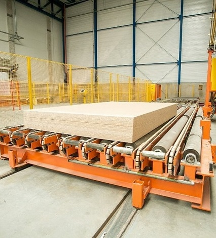

about us
Tartak began its operations as a wood processing company in Vyhoda village, Western Ukraine in 2011. Since then, the company has built a solid reputation founded on trust, service and quality. Tartak specializes in manufacturing a wide range of sawn and construction timber from spruce and fir. Timber comes from sustainable forests of the Carpathian region and certified. We have our own forest harvesting crew and all the necessary equipment for harvesting and transportation logs. Cutting-edge processing techniques and engineering are opening up and ever greater number of new ways for wood usage, in both architecture and construction.
product


Planed product provides the special atmosphere of comfort, warmth and elegance into the house